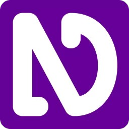
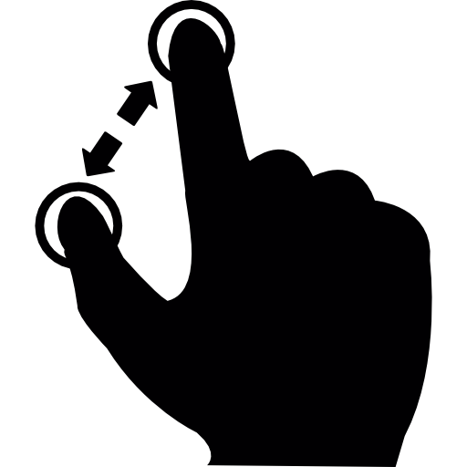
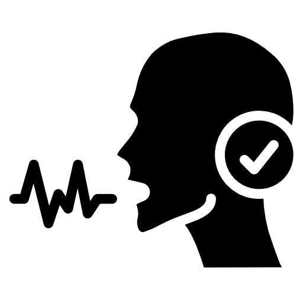

VLibras
VLibras é uma suíte de ferramentas gratuitas que traduz conteúdos digitais em português para a Língua Brasileira de Sinais (Libras), promovendo acessibilidade para pessoas surdas.
Leitor de tela
Um leitor de tela é um aplicativo de software que converte um texto em um discurso sintetizado, permitindo o usuário ouvir em vez de visualizar o conteúdo da Internet. Em termos mais formais, o conteúdo mostrado na tela é enviado para uma saída independente da presença de um monitor de vídeo. Podendo auxiliar pessoas dificudades de visão.
O NVDA (Non Visual Desktop Access) é um leitor de tela gratuito e de código aberto, ou seja, é um software totalmente livre de custos, indo na contramão do JAWS e Virtual Vision, onde o valor da licença é inacessível à grande parte do público alvo.

Teclado virtual
OTeclado virtual é uma ferramenta de acessibilidade que permite que pessoas com dificuldades em usar um teclado físico interajam com um computador. Ele exibe um teclado visual na tela, onde você pode usar o mouse ou outro dispositivo para selecionar as teclas. Para ativar o teclado na tela no Windows, você pode acessar as configurações de acessibilidade e ativar a opção "Usar o teclado virtual".

Ampliador de tela
Os Ampliadores de telas são dispositivos ou softwares que aumentam a visibilidade de elementos visuais em uma tela, facilitando a interação de pessoas com deficiência visual ou baixa visão.

Reconhecimento de voz
O Reconhecimento de voz é uma tecnologia que converte a fala humana em texto ou identifica uma pessoa pelas características da sua voz. Você pode ativá-lo facilmente no celular ou computador para dar comandos ou ditar textos sem usar as mãos.

Alternativas para mouse
Para usuários que buscam alternativas ao mouse tradicional, existem várias opções que oferecem funcionalidades e benefícios adicionais, como controle por movimentos da cabeça, uso de dispositivos de entrada como joysticks, ou até mesmo dispositivos de entrada de duas partes, como o Footime.